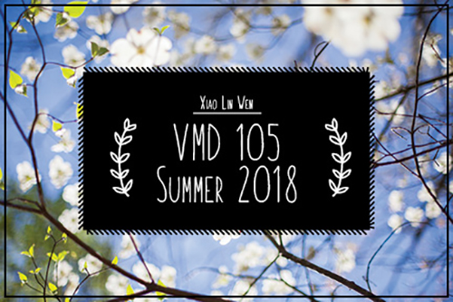

Adobe InDesign was fun and easy to use. I enjoyed this assignment, because I was able to create aesthetically pleasing postcards about my previous Adobe projects.
Adobe InDesign was fun and easy to use. I enjoyed this assignment, because I was able to create aesthetically pleasing postcards about my previous Adobe projects.
---